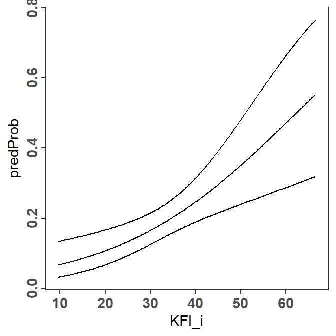
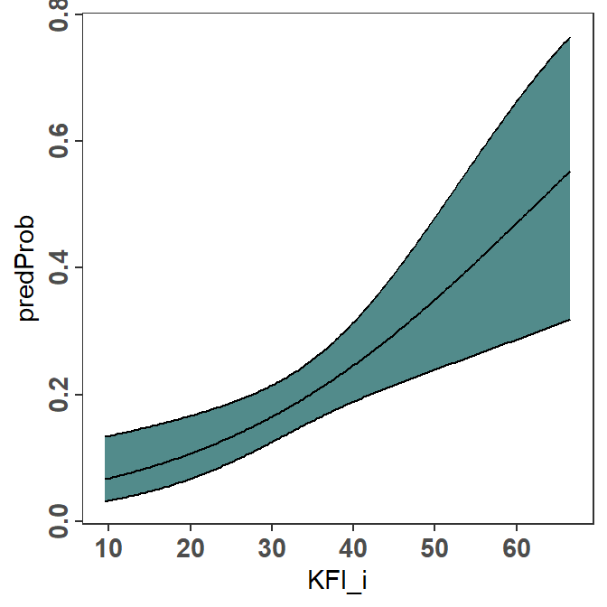
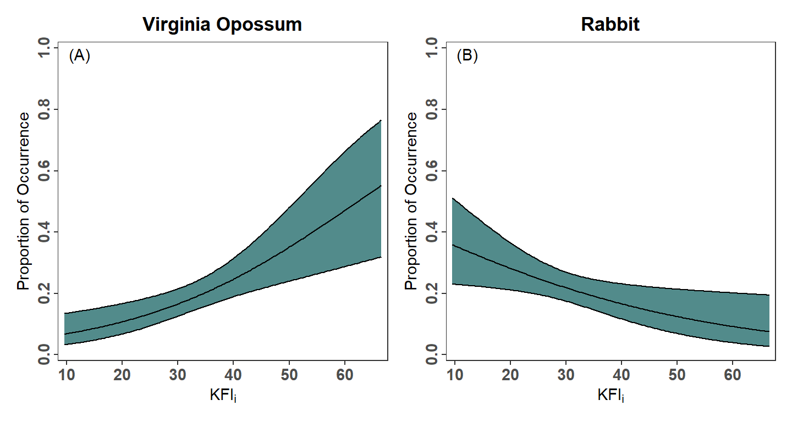
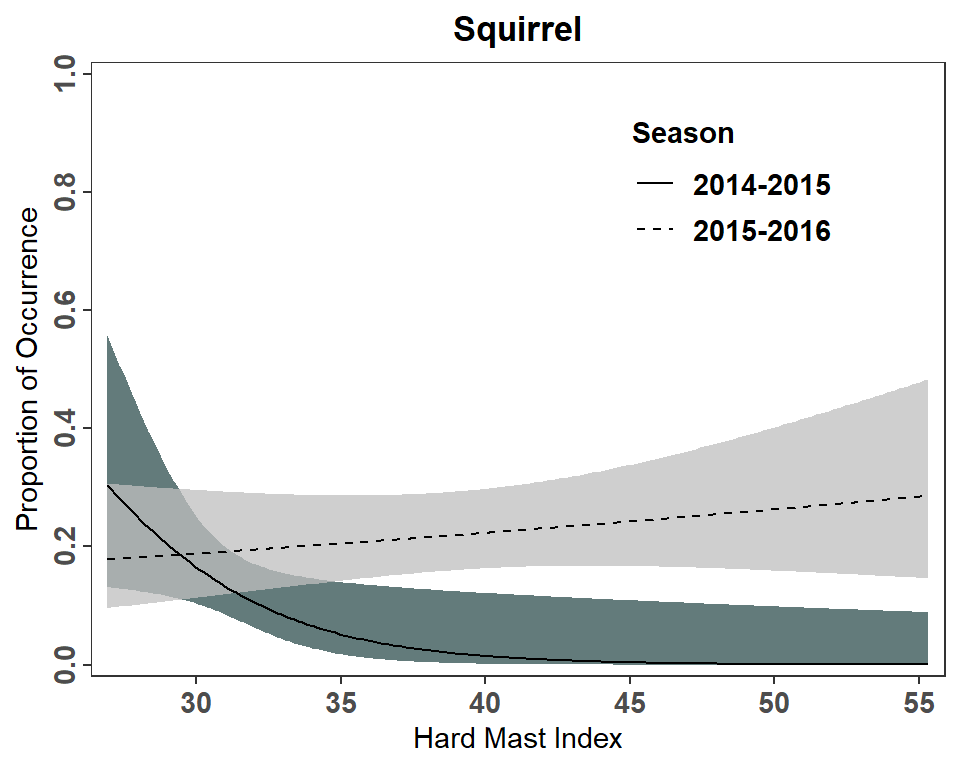
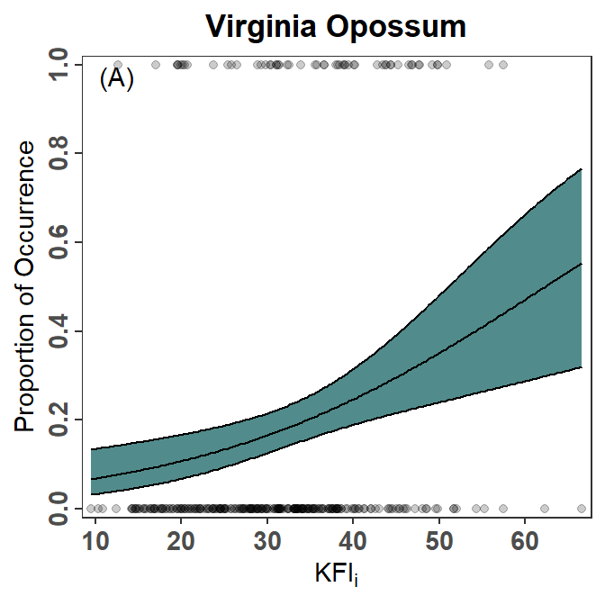
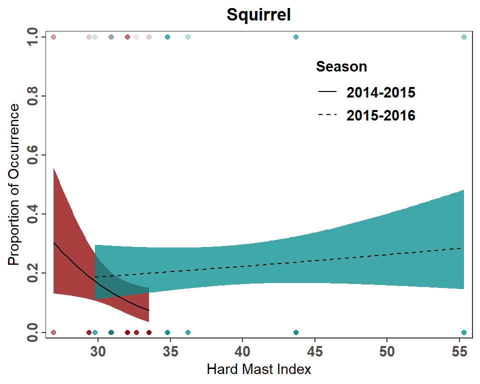

library(tidyverse) # for dplyr, ggplot2 packages
library(patchwork) # for positioning multiple plots in Figure 2Introduction
Landry et al. (2022) examined the diets of Bobcats (Lynx rufus) in West Virginia. They used logistic regression analyses in two parts of their analyses and presented those findings in their Figure 2 and Figure 3. In a previous post I demonstrated how to produce similar plots using geom_smooth() from ggplot2. Here I want to show an alternative method that is more laborious, but I am starting to prefer as it (a) seems to always work, (b) generalizes more easily, and (c) is not a “black box.”
Getting Setup
The following packages are loaded for use below.
The ggplot2 theme was set to theme_bw() but with modifications to more closely match the author’s choices (i.e., gridlines removed, centered and bolded plot title, slightly larger and bolded axis tick labels, rotated axis tick labels for the y-axis, and slightly larger and bolded text and title for the legend).
theme_set(
theme_bw() +
theme(panel.grid=element_blank(),
plot.title=element_text(hjust=0.5,face="bold"),
axis.text=element_text(size=11,face="bold"),
axis.text.y=element_text(angle=90,hjust=0.5),
legend.title=element_text(size=11,face="bold"),
legend.text=element_text(size=11,face="bold"))
)The x-axis of Figure 2 is labeled with “KFIi”. In ggplot2 the subscript is created with [i] as long as the text is wrapped in expression(). To minimize typing, I created an object with this expression here.
KFI_lbl <- expression(KFI[i])The process to construct the plots described below requires using the logistic regression model to predict logit-transformed values of the response variable. These values are back-transformed to the probability scale by “reversing” the logit transformation. I coded this back-transformation function here for use below several times.
# compute probablity (p) from a value x on the logit scale
inverse_logit <- function(x) exp(x)/(1+exp(x))
Get Data
Landry et al. (2022) provided the raw data for their study as a supplementary CSV file called “JFWM-22-001.S1.csv”. I loaded this file from my local directory, changed the Season variable from a numerical code to relevant labels, and restricted the data frame to only those variables used in this post.
dat <- read.csv("JFWM-22-001.S1.csv") |>
mutate(Season=case_when(
Season==1 ~ "2014-2015",
Season==2 ~ "2015-2016")) |>
select(Season,KFI_i,HardMast,Rabbits_Hares,Opossum,Squirrels)
head(dat)#R| Season KFI_i HardMast Rabbits_Hares Opossum Squirrels
#R| 1 2014-2015 42.64947 32.03768 0 0 0
#R| 2 2014-2015 44.44444 32.03768 0 1 0
#R| 3 2014-2015 18.75000 32.03768 0 0 0
#R| 4 2014-2015 33.15203 32.03768 0 0 1
#R| 5 2014-2015 14.28571 32.03768 1 0 0
#R| 6 2014-2015 22.22222 32.03768 0 0 0The Rabbits_Hares, Opossum, and Squirrels variables are code as 1 if that prey item occurred in the diet and a 0 if that prey did not occur in the diet.
Recreating Figure 2
Fitting the Logistic Regression
A logistic regression is computed in R with glm() using a formula of the form response~explanatory as the first argument, the relevant data frame in data=, and family="binomial" to force using the logit transformation and, thus, the fitting of a logistic regression. The response variable can either be coded as 0s and 1s, as it is here, or as a factor where the first level is the “failure.” The logistic regression examining the occurrence of Virginia Opossum in the diet of Bobcats relative to the KFIi index is fit below.
glmOpo <- glm(Opossum~KFI_i,data=dat,family="binomial")The results of the logistic regression are obtained from giving the object saved from glm() to summary(). These results are the same as those presented in Landry et al. (2022).1
1 See sentence directly above their Figure 2.
summary(glmOpo)#R|
#R| Call:
#R| glm(formula = Opossum ~ KFI_i, family = "binomial", data = dat)
#R|
#R| Deviance Residuals:
#R| Min 1Q Median 3Q Max
#R| -1.2694 -0.6694 -0.5652 -0.4397 2.2644
#R|
#R| Coefficients:
#R| Estimate Std. Error z value Pr(>|z|)
#R| (Intercept) -3.11771 0.52556 -5.932 2.99e-09 ***
#R| KFI_i 0.05002 0.01463 3.418 0.00063 ***
#R| ---
#R| Signif. codes: 0 '***' 0.001 '**' 0.01 '*' 0.05 '.' 0.1 ' ' 1
#R|
#R| (Dispersion parameter for binomial family taken to be 1)
#R|
#R| Null deviance: 288.81 on 299 degrees of freedom
#R| Residual deviance: 276.67 on 298 degrees of freedom
#R| AIC: 280.67
#R|
#R| Number of Fisher Scoring iterations: 4Making a Data Frame of Predicted Probabilities
The first step in recreating Figure 2 is to create a data frame of predicted probabilities, with 95% confidence intervals, for the occurrence of Virginia Opossums in the diet across the range of observed KFIi values. I begin this process by creating a data frame that has a KFI_i variable2 with a sequence of 199 values3 from the minimum to maximum observed KFIi values.
2 This variable name must be exactly as it was in the data frame used in glm() above.
3 The larger this number, the smoother the resultant curve in the figure will be.
KFI_i_df <- data.frame(KFI_i=seq(min(dat$KFI_i),max(dat$KFI_i),length.out=199))
head(KFI_i_df)#R| KFI_i
#R| 1 9.560078
#R| 2 9.848166
#R| 3 10.136254
#R| 4 10.424343
#R| 5 10.712431
#R| 6 11.000519Predicted values may be obtained with predict(), but for logistic regression interval="confidence" is not supported, so corresponding confidence interval values are not automatically computed. However, predict() can be used to make predictions, with standard errors, on the logit-transformed scale, which can then be used to “manually” calculate confidence intervals. The predictions on the logit-transformed scale and the corresponding standard errors are returned by including type="link" and se.fit=TRUE. predict() returns a list by default, but I forced it into a data frame below for easier manipulation further below.4
4 For our purposes, ignore the residual.scale column.
predOpo <- predict(glmOpo,KFI_i_df,type="link",se.fit=TRUE) |>
as.data.frame()
head(predOpo)#R| fit se.fit residual.scale
#R| 1 -2.63952 0.3936826 1
#R| 2 -2.62511 0.3897950 1
#R| 3 -2.61070 0.3859143 1
#R| 4 -2.59629 0.3820407 1
#R| 5 -2.58188 0.3781745 1
#R| 6 -2.56747 0.3743157 1It is important to note here that the fit values in this data frame are on the logit-transformed scale. These values can be back-transformed to predicted probabilities using the inverse_logit() function created above.
predOpo <- predOpo |>
mutate(predProb=inverse_logit(fit))
head(predOpo)#R| fit se.fit residual.scale predProb
#R| 1 -2.63952 0.3936826 1 0.06663790
#R| 2 -2.62511 0.3897950 1 0.06753978
#R| 3 -2.61070 0.3859143 1 0.06845296
#R| 4 -2.59629 0.3820407 1 0.06937757
#R| 5 -2.58188 0.3781745 1 0.07031373
#R| 6 -2.56747 0.3743157 1 0.07126156Approximate 95% confidence intervals for the logit-transformed predictions can be made by adding and subtracting 1.96 times the standard error from each predicted value.5 These values are then back-transformed to construct confidence intervals on the probability scale.
5 1.96 comes from normal distribution theory.
predOpo <- predOpo |>
mutate(predLCI=inverse_logit(fit-1.96*se.fit),
predUCI=inverse_logit(fit+1.96*se.fit))
head(predOpo)#R| fit se.fit residual.scale predProb predLCI predUCI
#R| 1 -2.63952 0.3936826 1 0.06663790 0.03194919 0.1337847
#R| 2 -2.62511 0.3897950 1 0.06753978 0.03263760 0.1345735
#R| 3 -2.61070 0.3859143 1 0.06845296 0.03333990 0.1353679
#R| 4 -2.59629 0.3820407 1 0.06937757 0.03405632 0.1361679
#R| 5 -2.58188 0.3781745 1 0.07031373 0.03478710 0.1369735
#R| 6 -2.56747 0.3743157 1 0.07126156 0.03553248 0.1377849Finally, I “bind as columns” the original data frame of KFIi values and select (and slightly re-arrange) the variables needed to make the figure.
predOpo <- predOpo |>
bind_cols(KFI_i_df) |>
select(KFI_i,predProb,predLCI,predUCI)
head(predOpo)#R| KFI_i predProb predLCI predUCI
#R| 1 9.560078 0.06663790 0.03194919 0.1337847
#R| 2 9.848166 0.06753978 0.03263760 0.1345735
#R| 3 10.136254 0.06845296 0.03333990 0.1353679
#R| 4 10.424343 0.06937757 0.03405632 0.1361679
#R| 5 10.712431 0.07031373 0.03478710 0.1369735
#R| 6 11.000519 0.07126156 0.03553248 0.1377849The steps above were separated to show the process. In practice, I would complete these steps in one set of code shown below.
predOpo <- predict(glmOpo,KFI_i_df,type="link",se.fit=TRUE) |>
as.data.frame() |>
mutate(predProb=inverse_logit(fit),
predLCI=inverse_logit(fit-1.96*se.fit),
predUCI=inverse_logit(fit+1.96*se.fit)) |>
bind_cols(KFI_i_df) |>
select(KFI_i,predProb,predLCI,predUCI)Just to be clear, predOpo created here contains a large sequence of KFIi values across the observed range of this variable, the predicted probability that Virginia Opossum will occur in the diet of Bobcat for each of these KFIi values, and approximate 95% confidence intervals for each of those predicted probabilities. These are the data required to reconstruct one panel of Figure 2.
Making one Sub-Panel
Showing the logistic regression results for Virginia Opossums (i.e., one panel in Figure 2) largely consists of plotting the predicted probabilities and 95% confidence bounds against the KFIi values.
pVO <- ggplot(data=predOpo,mapping=aes(x=KFI_i)) +
geom_line(mapping=aes(y=predProb)) +
geom_line(mapping=aes(y=predLCI)) +
geom_line(mapping=aes(y=predUCI))
pVO
geom_ribbon() can be used to shade the area between the two confidence bounds. However, geom_ribbon() should appear first so that the plotted lines will be “on top” of it and, thus, visible.6 Including color="black" in geom_ribbon() will also color the bounding lines of the ribbon, so that the separate geom_line()s for the confidence bounds are not needed.
6 I filled the ribbon with “darkslategray” in an attempt to match the author’s color choice.
pVO <- ggplot(data=predOpo,mapping=aes(x=KFI_i)) +
geom_ribbon(mapping=aes(ymin=predLCI,ymax=predUCI),
fill="darkslategray4",color="black") +
geom_line(mapping=aes(y=predProb))
pVO
Finally, to follow the author’s choices, I labeled the y-axis and adjusted its limits, breaks, and expansion factor; labeled the x-axis and adjusted its expansion factor; provided an overall plot title; and placed an “(A)” label in the upper-left corner.7 Thus, the final code for this portion of Figure 2 is as follows.
7 This seemed redundant to me given the plot title.
pVO <- ggplot(data=predOpo,mapping=aes(x=KFI_i)) +
geom_ribbon(mapping=aes(ymin=predLCI,ymax=predUCI),
fill="darkslategray4",color="black") +
geom_line(mapping=aes(y=predProb)) +
scale_y_continuous(name="Proportion of Occurrence",
limits=c(0,1),breaks=seq(0,1,0.2),
expand=expansion(mult=0.02)) +
scale_x_continuous(name=KFI_lbl,
expand=expansion(mult=0.02)) +
labs(title="Virginia Opossum") +
annotate(geom="text",x=-Inf,y=Inf,label="(A)",
hjust=-0.5,vjust=1.5)Finishing the Figure
The final Figure 2 has a second panel for “Rabbits.” Thus, the code from above was copied and adjusted slightly to make a similar plot for rabbits.
# fit logistic regression
glmRab <- glm(Rabbits_Hares~KFI_i,data=dat,family="binomial")
# make predicted probabilities data frame
predRab <- predict(glmRab,KFI_i_df,type="link",se.fit=TRUE) |>
as.data.frame() |>
mutate(predProb=inverse_logit(fit),
predLCI=inverse_logit(fit-1.96*se.fit),
predUCI=inverse_logit(fit+1.96*se.fit)) |>
bind_cols(KFI_i_df) |>
select(KFI_i,predProb,predLCI,predUCI)
# make the plot
pRH <- ggplot(data=predRab,mapping=aes(x=KFI_i)) +
geom_ribbon(mapping=aes(ymin=predLCI,ymax=predUCI),
fill="darkslategray4",color="black") +
geom_line(mapping=aes(y=predProb)) +
scale_y_continuous(name="Proportion of Occurrence",
limits=c(0,1),breaks=seq(0,1,0.2),
expand=expansion(mult=0.02)) +
scale_x_continuous(name=KFI_lbl,
expand=expansion(mult=0.02)) +
labs(title="Rabbit") +
annotate(geom="text",x=-Inf,y=Inf,label="(B)",
hjust=-0.5,vjust=1.5)The two plots are placed side-by-side as shown below using functionality from the patchwork package.8
8 The author’s used longer ticks on the axes then I used here. Also, their figure has vertical “striations” that I think are a result of how they constructed the plot and not a feature to be replicated.
pVO + pRH
Recreating Figure 3
Fitting the Logistic Regression
Figure 3 is used by Landry et al. (2022) to demonstrate an interaction effect of season of capture on the relationship between the occurrence of squirrels in the diet of Bobcat and hard mast index. Thus, a logistic regression is fit with hard mast index, season, and the interaction between hard mast index and season as explanatory “variables.”9
9 I coded the three explanatory terms explicitly here, however HardMast*Season would have expanded to code all three as well.
glmSqrl <- glm(Squirrels~HardMast+Season+HardMast:Season,data=dat,family="binomial")The summary results (not shown here) match those in Landry et al. (2022).10
10 See results in the second sentence above Figure 3.
summary(glmSqrl)Making a Data Frame of Predicted Probabilities
Similar to constructing Figure 2, a data frame of predicted probabilities with 95% confidence intervals at a large number of hard mast index values is needed to reproduce Figure 3. However, the probabilities must be predicted for both seasons. The data frame used to make the predictions must have a variable for the hard mast index values and the season as the glm() fit above used both of these variables. Thus, this data frame must have the 199 hard mast index values repeated twice, corresponding to the two seasons and each season repeated 199 times to match the hard mast index values.
HM_df <- data.frame(
HardMast=rep(seq(min(dat$HardMast),max(dat$HardMast),length.out=199),2),
Season=rep(unique(dat$Season),each=199))
FSA::headtail(HM_df)#R| HardMast Season
#R| 1 26.92086 2014-2015
#R| 2 27.06435 2014-2015
#R| 3 27.20784 2014-2015
#R| 396 55.04534 2015-2016
#R| 397 55.18883 2015-2016
#R| 398 55.33232 2015-2016With this data frame, the data frame of predicted probabilities is constructed as demonstrated for Figure 2.
predSqrl <- predict(glmSqrl,HM_df,type="link",se.fit=TRUE) |>
as.data.frame() |>
mutate(predProb=inverse_logit(fit),
predLCI=inverse_logit(fit-1.96*se.fit),
predUCI=inverse_logit(fit+1.96*se.fit)) |>
bind_cols(HM_df) |>
select(HardMast,Season,predProb,predLCI,predUCI)
FSA::headtail(predSqrl)#R| HardMast Season predProb predLCI predUCI
#R| 1 26.92086 2014-2015 0.3040081 0.1317484 0.5570061
#R| 2 27.06435 2014-2015 0.2962642 0.1309603 0.5404592
#R| 3 27.20784 2014-2015 0.2886357 0.1301474 0.5238861
#R| 396 55.04534 2015-2016 0.2846782 0.1470444 0.4788193
#R| 397 55.18883 2015-2016 0.2853101 0.1466732 0.4811068
#R| 398 55.33232 2015-2016 0.2859428 0.1463013 0.4833981Finishing the Figure
Figure 3 is constructed very similarly to Figure 2 except that a fill= color must be mapped to Season in geom_ribbon() and linetype= must be mapped to Season in geom_line().11 scale_fill_manual() and scale_linetype_manual() are used to over-ride the default fill colors and line types to better match the author’s choices. Further guide="none" wais used in scale_fill_manual() as the author’s did not show the fill color in their legend. Finally, I manually positioned the legend 75% of the way along the x-axis and 80% of the way up the y-axis.12
11 In geom_ribbon() I did not include color= because the authors did not outline the confidence regions. I included a slight transparency with alplha=0.75 so the two regions were more visible where they overlapped.
12 Again, the author’s Figure 3 looks striated, but I did not consider this a feature of the plot.
ggplot(data=predSqrl,mapping=aes(x=HardMast)) +
geom_ribbon(mapping=aes(ymin=predLCI,ymax=predUCI,fill=Season),
alpha=0.75) +
geom_line(mapping=aes(y=predProb,linetype=Season)) +
scale_y_continuous(name="Proportion of Occurrence",
limits=c(0,1),breaks=seq(0,1,0.2),
expand=expansion(mult=0.02)) +
scale_x_continuous(name="Hard Mast Index",
expand=expansion(mult=0.02)) +
scale_fill_manual(values=c("2014-2015"="darkslategray","2015-2016"="gray75"),
guide="none") +
scale_linetype_manual(values=c("2014-2015"="solid","2015-2016"="dashed")) +
labs(title="Squirrel") +
theme(legend.position=c(0.75,0.8))
It should be noted that this plot does not fully match Figure 3 in Landry et al. (2022). This is most evident for the 2014-2015 seasons at small hard mast indices where the authors predicted probability approaches 0.4 more closely and the upper level of the confidence region is above 0.6. I am not sure what explains this difference but it could be that the author’s used a slightly lower minimum hard mast index for their predictions or that their predicted values were made from separate logistic regressions for each season.
Further Thoughts
It is not my point with these posts to critique the author’s presentations – there are more than one way to present results and many times it is personal preference. Below, though, I articulate changes to the figures that I would prefer.
Show the Data
I generally don’t like plots that don’t show observed data, which is the case for both Figures 2 and 3. The observed data can be added to the plot using geom_point() as shown in a previous post. Note that the data=predOpo had to be removed from ggplot() and added to geom_ribbon() and geom_line() because, with this addition, geom_point() uses a different data frame. When geoms use different data frames, those data frames must be declared in the geom rather than in ggplot(). Also note the use of alpha= here so that the points are semi-transparent to handle overplotting.
pVO2 <- ggplot(mapping=aes(x=KFI_i)) +
geom_ribbon(data=predOpo,mapping=aes(ymin=predLCI,ymax=predUCI),
fill="darkslategray4",color="black") +
geom_line(data=predOpo,mapping=aes(y=predProb)) +
geom_point(data=dat,mapping=aes(y=Opossum),alpha=0.2) +
scale_y_continuous(name="Proportion of Occurrence",
limits=c(0,1),breaks=seq(0,1,0.2),
expand=expansion(mult=0.02)) +
scale_x_continuous(name=KFI_lbl,
expand=expansion(mult=0.02)) +
labs(title="Virginia Opossum") +
annotate(geom="text",x=-Inf,y=Inf,label="(A)",
hjust=-0.5,vjust=1.5)
pVO2
Present Only Over the Range of the Group’s Data
Figure 3 as created above and shown in Landry et al. (2022) implies the same range of hard mast index values in both seasons (i.e., the logistic regression model is presented over the same range of hard mast index values for both seasons). However, a summary of the range of hard mast index values for each season reveals very little overlap between the two seasons.
smry <- dat |>
group_by(Season) |>
summarize(n=n(),
minHM=min(HardMast,na.rm=TRUE),
maxHM=max(HardMast,na.rm=TRUE))
smry#R| # A tibble: 2 × 4
#R| Season n minHM maxHM
#R| <chr> <int> <dbl> <dbl>
#R| 1 2014-2015 150 26.9 33.5
#R| 2 2015-2016 150 29.8 55.3My preference is to show the model fits across the ranges observed within each season. To do so requires modifying HM_df from above to use the range of values within each season, rather than the range of values for both seasons combined. I could not find a simple way to do this, though it is accomplished below using smry from above and a combination of apply(), with a user-defined function for sequence, and pivot_longer().
seq2 <- function(x) seq(x["minHM"],x["maxHM"],length.out=199)
tmp <- apply(smry,MARGIN=1,FUN=seq2) |>
as.data.frame()
names(tmp) <- smry$Season
HM_df <- pivot_longer(tmp,cols=everything(),
values_to="HardMast",names_to="Season") |>
arrange(Season,HardMast)
FSA::headtail(HM_df)#R| Season HardMast
#R| 1 2014-2015 26.92086
#R| 2 2014-2015 26.95414
#R| 3 2014-2015 26.98742
#R| 396 2015-2016 55.07422
#R| 397 2015-2016 55.20327
#R| 398 2015-2016 55.33232Then make a new predicted probabilities data frame from this new data frame.
predSqrl <- predict(glmSqrl,HM_df,type="link",se.fit=TRUE) |>
as.data.frame() |>
mutate(predProb=inverse_logit(fit),
predLCI=inverse_logit(fit-1.96*se.fit),
predUCI=inverse_logit(fit+1.96*se.fit)) |>
bind_cols(HM_df) |>
select(HardMast,Season,predProb,predLCI,predUCI)
FSA::headtail(predSqrl)#R| HardMast Season predProb predLCI predUCI
#R| 1 26.92086 2014-2015 0.3040081 0.1317484 0.5570061
#R| 2 26.95414 2014-2015 0.3022018 0.1315677 0.5531727
#R| 3 26.98742 2014-2015 0.3004017 0.1313858 0.5493363
#R| 396 55.07422 2015-2016 0.2848053 0.1469697 0.4792794
#R| 397 55.20327 2015-2016 0.2853737 0.1466358 0.4813372
#R| 398 55.33232 2015-2016 0.2859428 0.1463013 0.4833981And remake the plot, also including the raw data. Note that I changed colors here as the original colors in Figure 3 could not be differentiated well when using semi-transparency for over-plotting.
ggplot(mapping=aes(x=HardMast)) +
geom_ribbon(data=predSqrl,mapping=aes(ymin=predLCI,ymax=predUCI,fill=Season),
alpha=0.75) +
geom_line(data=predSqrl,mapping=aes(y=predProb,linetype=Season)) +
geom_point(data=dat,mapping=aes(y=Squirrels,color=Season),
alpha=0.1) +
scale_y_continuous(name="Proportion of Occurrence",
limits=c(0,1),breaks=seq(0,1,0.2),
expand=expansion(mult=0.02)) +
scale_x_continuous(name="Hard Mast Index",
expand=expansion(mult=0.02)) +
scale_fill_manual(values=c("2014-2015"="red4","2015-2016"="cyan4"),
guide="none") +
scale_color_manual(values=c("2014-2015"="red4","2015-2016"="cyan4"),
guide="none") +
scale_linetype_manual(values=c("2014-2015"="solid","2015-2016"="dashed")) +
labs(title="Squirrel") +
theme(legend.position=c(0.75,0.8))
References
Landry, S. M., J. E. Roof, R. E. Rogers, A. B. Welsh, C. W. Ryan, and J. T. Anderson. 2022. Dietary patterns suggest West Virginia Bobcats are generalist carnivores. Journal of Fish and Wildlife Management 13(2):447–459.
Reuse
Citation
BibTeX citation:
@online{h. ogle2023,
author = {H. Ogle, Derek},
title = {Landry Et Al. (2022) {Logistic} {Regression} {Figures}},
date = {2023-03-06},
url = {https://fishr-core-team.github.io/fishR//blog/posts/2023-3-6_Landryetal2022_LogRegress},
langid = {en}
}
For attribution, please cite this work as:
H. Ogle, D. 2023, March 6. Landry et al. (2022) Logistic Regression
Figures. https://fishr-core-team.github.io/fishR//blog/posts/2023-3-6_Landryetal2022_LogRegress.